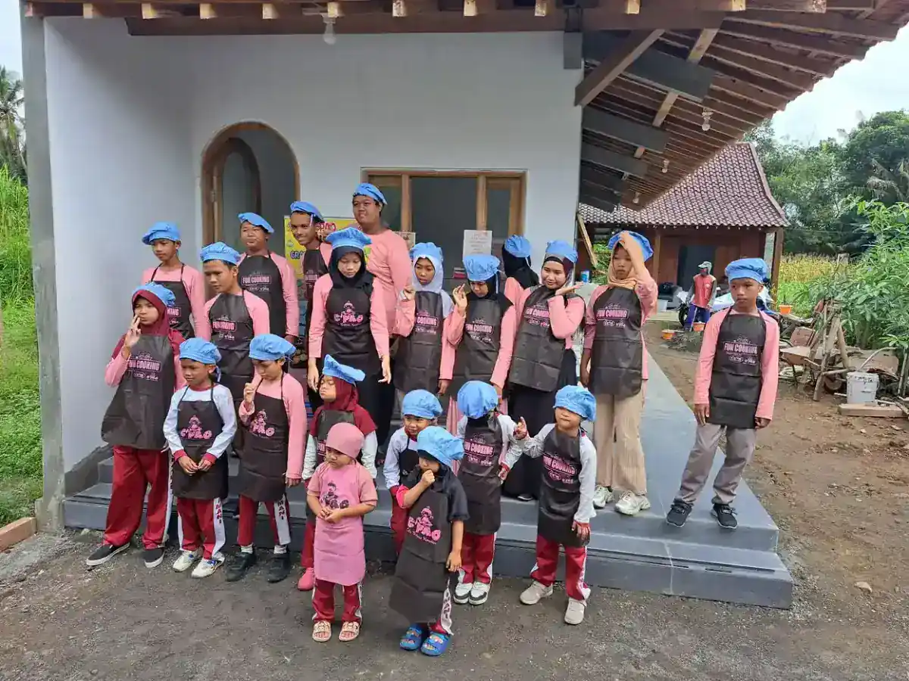

Pendidikan khusus adalah layanan pendidikan yang dirancang secara spesifik untuk memenuhi kebutuhan belajar anak berkebutuhan khusus (ABK). Setiap anak memiliki hak yang sama untuk mendapatkan pendidikan berkualitas, termasuk anak-anak yang memiliki tantangan dalam belajar akibat kondisi fisik, mental, emosional, atau sosial tertentu. Pendidikan khusus hadir sebagai jawaban atas kebutuhan ini, menyediakan lingkungan, metode, dan pendekatan yang disesuaikan agar setiap anak dapat mengembangkan potensi terbaiknya.
Di Indonesia, kesadaran akan pentingnya pendidikan khusus semakin meningkat dari tahun ke tahun. Data dari Kementerian Pendidikan dan Kebudayaan menunjukkan bahwa jumlah anak berkebutuhan khusus yang terlayani oleh sistem pendidikan terus bertambah, meskipun masih ada tantangan besar dalam hal pemerataan akses dan kualitas layanan. Sebagai lembaga yang bergerak di bidang pendidikan inklusi, YUKA (Yayasan Ukhuwah Kaffah Amanatullah) berkomitmen untuk memberikan layanan pendidikan khusus yang berkualitas melalui Sekolah Inklusi Taruna Imani di Sleman, Yogyakarta.
Artikel ini akan membahas secara komprehensif tentang pendidikan khusus: mulai dari pengertian, dasar hukum, jenis layanan, kurikulum, hingga panduan praktis menyusun Program Pembelajaran Individual (PPI). Kami menulis berdasarkan kombinasi referensi akademis dan pengalaman nyata di lapangan mendampingi anak-anak berkebutuhan khusus setiap hari.
Daftar Isi
- Apa Itu Pendidikan Khusus?
- Dasar Hukum Pendidikan Khusus di Indonesia
- Jenis-Jenis Layanan Pendidikan Khusus
- Kurikulum Pendidikan Khusus
- Program Pembelajaran Individual (PPI): Pengertian dan Cara Menyusun
- Perbedaan Pendidikan Khusus, Inklusi, dan Segregasi
- Model Pendidikan YUKA untuk ABK
- FAQ Seputar Pendidikan Khusus
Apa Itu Pendidikan Khusus?
Pendidikan khusus merupakan bentuk layanan pendidikan yang diselenggarakan bagi peserta didik yang memiliki tingkat kesulitan dalam mengikuti proses pembelajaran karena kelainan fisik, emosional, mental, sosial, dan/atau memiliki potensi kecerdasan dan bakat istimewa. Istilah ini juga sering disebut sebagai pendidikan luar biasa dalam konteks Indonesia, meskipun penggunaan istilah "luar biasa" kini mulai digantikan dengan istilah yang lebih inklusif.
Menurut Hallahan, Kauffman, dan Pullen dalam bukunya Exceptional Learners, pendidikan khusus adalah instruksi yang dirancang secara khusus untuk memenuhi kebutuhan unik dari peserta didik berkebutuhan khusus. Ini bukan hanya soal tempat belajar, melainkan tentang pendekatan, metode, dan strategi pembelajaran yang berbeda dari pendidikan reguler pada umumnya.
Beberapa karakteristik utama pendidikan khusus meliputi:
- Individualisasi pembelajaran: Setiap anak mendapatkan program yang disesuaikan dengan kemampuan, kebutuhan, dan potensinya masing-masing
- Modifikasi kurikulum: Materi pelajaran diadaptasi agar sesuai dengan tingkat kemampuan anak, baik dalam hal konten, proses, maupun evaluasi
- Tenaga pendidik terlatih: Guru yang mengajar memiliki kompetensi khusus dalam mendampingi ABK, seperti Guru Pendamping Khusus (GPK) atau shadow teacher
- Lingkungan yang mendukung: Fasilitas dan sarana prasarana dirancang untuk mengakomodasi berbagai kebutuhan khusus
- Pendekatan multidisipliner: Melibatkan berbagai profesi seperti psikolog, terapis, dokter, dan pekerja sosial dalam mendukung proses pendidikan
Penting untuk dipahami bahwa pendidikan khusus bukan berarti "pendidikan yang lebih rendah." Justru sebaliknya, pendidikan khusus membutuhkan keahlian, kesabaran, dan dedikasi yang luar biasa dari para pendidiknya. Tujuan utamanya adalah membantu setiap anak mencapai kemandirian dan kualitas hidup yang optimal sesuai dengan potensi yang dimilikinya.
Tahukah Anda?
Di Indonesia, terdapat lebih dari 2.000 Sekolah Luar Biasa (SLB) yang tersebar di seluruh provinsi. Namun demikian, masih banyak anak berkebutuhan khusus yang belum terjangkau layanan pendidikan, terutama di daerah terpencil dan pedesaan.
Dasar Hukum Pendidikan Khusus di Indonesia
Penyelenggaraan pendidikan khusus di Indonesia memiliki landasan hukum yang kuat. Negara menjamin hak setiap warga negara untuk mendapatkan pendidikan tanpa terkecuali, termasuk anak-anak berkebutuhan khusus. Berikut adalah beberapa dasar hukum yang menjadi acuan:
1. UUD 1945 Pasal 31
Undang-Undang Dasar 1945 Pasal 31 menyatakan bahwa setiap warga negara berhak mendapatkan pendidikan. Ayat ini menjadi landasan paling mendasar yang menjamin hak pendidikan bagi seluruh warga negara tanpa diskriminasi, termasuk anak berkebutuhan khusus.
2. UU No. 20 Tahun 2003 tentang Sistem Pendidikan Nasional
Pasal 5 ayat (2) secara tegas menyebutkan bahwa warga negara yang memiliki kelainan fisik, emosional, mental, intelektual, dan/atau sosial berhak memperoleh pendidikan khusus. Pasal 32 ayat (1) lebih lanjut mendefinisikan pendidikan khusus sebagai pendidikan bagi peserta didik yang memiliki tingkat kesulitan dalam mengikuti proses pembelajaran karena kelainan fisik, emosional, mental, sosial, dan/atau memiliki potensi kecerdasan dan bakat istimewa.
3. PP No. 17 Tahun 2010 tentang Pengelolaan dan Penyelenggaraan Pendidikan
Peraturan Pemerintah ini mengatur secara lebih rinci tentang penyelenggaraan pendidikan khusus, termasuk bentuk satuan pendidikan, kurikulum, dan standar pengelolaan. PP ini menjadi pedoman teknis bagi penyelenggara pendidikan khusus di seluruh Indonesia.
4. Permendiknas No. 70 Tahun 2009 tentang Pendidikan Inklusif
Peraturan ini mengatur tentang pendidikan inklusif bagi peserta didik yang memiliki kelainan dan memiliki potensi kecerdasan dan/atau bakat istimewa. Permendiknas ini membuka jalan bagi ABK untuk belajar di sekolah reguler dengan dukungan layanan pendidikan khusus.
5. UU No. 8 Tahun 2016 tentang Penyandang Disabilitas
Undang-undang ini memperkuat hak pendidikan bagi penyandang disabilitas. Pasal 10 menjamin hak mendapatkan pendidikan yang bermutu pada satuan pendidikan di semua jenis, jalur, dan jenjang pendidikan secara inklusif dan khusus. UU ini juga mengamanatkan adanya akomodasi yang layak bagi peserta didik penyandang disabilitas.
"Pendidikan khusus bukan sekadar kewajiban hukum, melainkan cerminan dari komitmen kita sebagai bangsa untuk memastikan bahwa tidak ada satu pun anak yang tertinggal dalam mendapatkan haknya atas pendidikan." - Tim Pendidikan YUKA
Dengan adanya kerangka hukum yang komprehensif ini, seharusnya setiap anak berkebutuhan khusus di Indonesia dapat mengakses layanan pendidikan yang sesuai dengan kebutuhannya. Tantangannya kini terletak pada implementasi di lapangan, yang membutuhkan sinergi antara pemerintah, lembaga pendidikan, masyarakat, dan keluarga.
Jenis-Jenis Layanan Pendidikan Khusus
Layanan pendidikan khusus hadir dalam berbagai bentuk dan format, disesuaikan dengan jenis dan tingkat kebutuhan khusus yang dimiliki oleh peserta didik. Pemahaman tentang berbagai jenis layanan ini penting bagi orang tua dan pendidik agar dapat memilih opsi yang paling sesuai untuk setiap anak.

1. Sekolah Luar Biasa (SLB)
Sekolah Luar Biasa (SLB) merupakan bentuk layanan pendidikan khusus yang paling dikenal di Indonesia. SLB menyelenggarakan pendidikan secara terpisah dari sekolah reguler, dengan kurikulum, guru, dan fasilitas yang dirancang khusus untuk ABK. SLB di Indonesia dibagi menjadi beberapa jenis berdasarkan kategori kekhususan:
- SLB-A: Untuk anak tunanetra (gangguan penglihatan)
- SLB-B: Untuk anak tunarungu (gangguan pendengaran)
- SLB-C: Untuk anak tunagrahita (gangguan intelektual)
- SLB-D: Untuk anak tunadaksa (gangguan fisik/motorik)
- SLB-E: Untuk anak tunalaras (gangguan emosi dan perilaku)
- SLB-G: Untuk anak tunaganda (memiliki lebih dari satu jenis kekhususan)
2. Sekolah Inklusif
Sekolah inklusif adalah sekolah reguler yang menerima dan melayani ABK belajar bersama dengan peserta didik reguler. Di sekolah inklusif, ABK mendapatkan dukungan berupa modifikasi kurikulum, pendampingan dari Guru Pendamping Khusus (GPK), dan akomodasi pembelajaran yang sesuai. Pendekatan ini mendorong interaksi sosial antara ABK dan anak reguler, yang bermanfaat bagi perkembangan sosial-emosional keduanya.
3. Kelas Khusus di Sekolah Reguler
Beberapa sekolah reguler menyediakan kelas khusus yang didedikasikan untuk ABK. Dalam model ini, ABK belajar di kelas terpisah untuk mata pelajaran tertentu namun tetap bergabung dengan kelas reguler untuk kegiatan-kegiatan tertentu seperti upacara, olahraga, dan kegiatan ekstrakurikuler. Model ini menjadi jembatan antara pendidikan khusus dan pendidikan reguler.
4. Layanan Pendidikan di Rumah (Homebound)
Bagi anak-anak yang kondisinya tidak memungkinkan untuk hadir di sekolah secara rutin, seperti anak dengan kondisi medis berat atau keterbatasan mobilitas yang sangat signifikan, layanan pendidikan dapat diberikan di rumah. Guru atau tutor datang ke rumah siswa untuk memberikan pembelajaran sesuai dengan program yang telah disusun.
5. Layanan Pendidikan di Rumah Sakit
Anak-anak yang menjalani perawatan jangka panjang di rumah sakit juga berhak mendapatkan layanan pendidikan. Beberapa rumah sakit besar di Indonesia sudah menyediakan ruang kelas atau program pembelajaran bagi pasien anak yang membutuhkan perawatan berkepanjangan.
6. Pusat Terapi dan Intervensi Dini
Untuk anak usia dini yang teridentifikasi memiliki kebutuhan khusus, pusat-pusat terapi menyediakan program intervensi dini yang mencakup terapi wicara, terapi okupasi, terapi sensori integrasi, dan stimulasi perkembangan. Intervensi dini terbukti sangat efektif dalam mengoptimalkan perkembangan anak dan mempersiapkan mereka untuk memasuki jenjang pendidikan formal.
Kurikulum Pendidikan Khusus
Kurikulum pendidikan khusus merupakan pedoman pembelajaran yang dirancang dengan memperhatikan kebutuhan, kemampuan, dan potensi peserta didik berkebutuhan khusus. Kurikulum ini bersifat fleksibel dan adaptif, artinya dapat dimodifikasi sesuai dengan kondisi dan kebutuhan individual setiap anak.

Prinsip Pengembangan Kurikulum Pendidikan Khusus
Pengembangan kurikulum pendidikan khusus berpedoman pada beberapa prinsip dasar yang membedakannya dari kurikulum reguler:
- Fleksibilitas: Kurikulum dapat disesuaikan dengan tingkat kemampuan dan kebutuhan masing-masing peserta didik. Tidak semua anak harus mencapai standar yang sama pada waktu yang sama
- Fungsionalitas: Materi pembelajaran diarahkan pada keterampilan yang berguna dalam kehidupan sehari-hari. Bagi anak dengan kebutuhan khusus berat, keterampilan hidup (life skills) menjadi prioritas utama
- Keterpaduan: Kurikulum mengintegrasikan berbagai aspek perkembangan anak, meliputi kognitif, afektif, psikomotor, dan sosial-emosional secara bersamaan
- Berorientasi pada anak: Anak menjadi pusat dari proses pembelajaran. Kurikulum disusun berdasarkan hasil asesmen terhadap kemampuan dan kebutuhan anak, bukan berdasarkan standar usia semata
- Berkesinambungan: Pembelajaran dirancang secara bertahap dan berkesinambungan, dari yang sederhana menuju yang kompleks, sesuai dengan ritme perkembangan anak
Komponen Kurikulum Pendidikan Khusus
Secara umum, kurikulum pendidikan khusus mencakup beberapa komponen utama:
- Program akademik yang dimodifikasi: Materi pelajaran seperti Bahasa Indonesia, Matematika, dan IPA diadaptasi sesuai kemampuan anak. Untuk anak slow learner, modifikasi bisa berupa penyederhanaan materi dan penambahan waktu belajar. Untuk anak tunagrahita berat, fokus bergeser ke keterampilan fungsional
- Program pengembangan diri: Meliputi keterampilan merawat diri (self-care), keterampilan domestik, dan keterampilan sosial yang diperlukan untuk kehidupan sehari-hari
- Program kekhususan: Pembelajaran spesifik sesuai jenis kebutuhan khusus, seperti orientasi dan mobilitas untuk tunanetra, bahasa isyarat untuk tunarungu, atau terapi perilaku untuk anak autisme
- Program vokasional: Pelatihan keterampilan kerja yang mempersiapkan peserta didik untuk dapat mandiri secara ekonomi, seperti keterampilan memasak, menjahit, pertukangan, pertanian, atau keterampilan digital
Modifikasi Kurikulum dalam Praktik
Dalam praktiknya, modifikasi kurikulum dapat dilakukan dalam empat tingkatan:
- Duplikasi: Menggunakan kurikulum reguler tanpa perubahan, cocok untuk ABK dengan kemampuan intelektual rata-rata atau di atas rata-rata
- Modifikasi: Mengubah sebagian kurikulum reguler agar sesuai dengan kemampuan ABK, misalnya menyederhanakan tingkat kesulitan soal atau mengurangi jumlah indikator pencapaian
- Substitusi: Mengganti sebagian kurikulum reguler dengan materi yang lebih sesuai dengan kebutuhan ABK, misalnya mengganti pelajaran olahraga tertentu dengan terapi fisik
- Omisi: Menghilangkan bagian kurikulum yang tidak mungkin dilakukan oleh ABK tertentu, misalnya meniadakan materi menggambar perspektif untuk anak tunanetra total
Program Pembelajaran Individual (PPI): Pengertian dan Cara Menyusun
Program Pembelajaran Individual (PPI), atau yang dalam istilah internasional dikenal sebagai Individualized Education Program (IEP), merupakan jantung dari penyelenggaraan pendidikan khusus. PPI adalah dokumen tertulis yang memuat rencana pembelajaran yang dirancang secara spesifik untuk satu orang siswa berkebutuhan khusus, berdasarkan hasil asesmen menyeluruh terhadap kemampuan, kebutuhan, dan potensi anak tersebut.
PPI ABK bukan sekadar dokumen administratif. PPI adalah peta jalan yang mengarahkan seluruh proses pembelajaran anak, memastikan bahwa setiap kegiatan belajar memiliki tujuan yang jelas dan terukur. PPI juga menjadi alat komunikasi yang menghubungkan guru, orang tua, terapis, dan profesional lain yang terlibat dalam pendidikan anak.
Komponen Utama PPI
Sebuah PPI yang baik memuat beberapa komponen penting berikut:
- Identitas siswa: Data lengkap peserta didik termasuk nama, usia, jenis kebutuhan khusus, dan riwayat pendidikan
- Hasil asesmen: Deskripsi kemampuan saat ini (present level of performance) dalam berbagai aspek perkembangan
- Tujuan tahunan: Tujuan pembelajaran jangka panjang yang ingin dicapai dalam satu tahun ajaran
- Tujuan jangka pendek: Indikator pencapaian yang lebih spesifik dan terukur untuk setiap periode evaluasi
- Strategi dan metode: Pendekatan, metode, dan media pembelajaran yang akan digunakan
- Jadwal layanan: Rincian waktu, durasi, dan frekuensi setiap jenis layanan yang diberikan
- Kriteria evaluasi: Standar dan cara mengukur ketercapaian tujuan pembelajaran
- Tim penyusun: Daftar pihak yang terlibat dalam penyusunan PPI
Langkah-Langkah Menyusun PPI
Berikut adalah panduan praktis untuk menyusun Program Pembelajaran Individual yang efektif:
-
Asesmen Awal Kemampuan Anak
Langkah pertama dan paling krusial dalam menyusun PPI adalah melakukan asesmen menyeluruh terhadap kemampuan anak saat ini. Asesmen ini mencakup berbagai aspek: kemampuan akademik (membaca, menulis, berhitung), kemampuan komunikasi, kemampuan motorik kasar dan halus, kemampuan sosial-emosional, serta kemampuan bina diri. Gunakan berbagai instrumen asesmen yang sesuai, mulai dari observasi, tes standar, wawancara dengan orang tua, hingga analisis portofolio anak. Hasil asesmen inilah yang menjadi titik awal (baseline) untuk menetapkan target pembelajaran.
-
Identifikasi Kebutuhan Belajar
Berdasarkan hasil asesmen, identifikasi secara spesifik area-area yang membutuhkan intervensi dan dukungan. Tentukan prioritas kebutuhan belajar anak. Misalnya, apakah anak lebih membutuhkan pengembangan kemampuan komunikasi, keterampilan sosial, atau kemampuan akademik dasar? Libatkan orang tua dalam proses identifikasi ini karena mereka memiliki pemahaman mendalam tentang kebutuhan anak di lingkungan rumah dan komunitas. Prioritaskan kebutuhan yang paling mendesak dan yang akan memberikan dampak terbesar bagi kemandirian anak.
-
Tentukan Tujuan Jangka Pendek dan Jangka Panjang
Rumuskan tujuan pembelajaran yang spesifik, terukur, dapat dicapai, relevan, dan berbatas waktu (SMART). Tujuan jangka panjang biasanya ditetapkan untuk satu tahun ajaran, misalnya: "Pada akhir tahun ajaran, siswa mampu membaca kalimat sederhana yang terdiri dari 5-7 kata dengan pemahaman 80%." Tujuan jangka pendek adalah langkah-langkah kecil menuju tujuan jangka panjang, misalnya: "Dalam 3 bulan pertama, siswa mampu mengenal 20 huruf alfabet." Pastikan setiap tujuan realistis dan sesuai dengan kemampuan anak saat ini.
-
Pilih Metode dan Media Pembelajaran
Tentukan pendekatan, metode, dan media yang paling efektif untuk mencapai tujuan yang telah ditetapkan. Pertimbangkan gaya belajar anak (visual, auditori, kinestetik, atau campuran), tingkat perhatian, dan preferensi anak. Pilih media pembelajaran yang konkret dan multisensoris. Misalnya, untuk mengajarkan konsep bilangan pada anak tunagrahita, gunakan benda-benda nyata yang bisa dipegang dan dihitung, bukan hanya gambar di papan tulis. Variasikan metode pembelajaran agar anak tidak bosan dan tetap termotivasi. Termasuk di dalamnya pemanfaatan teknologi adaptif jika diperlukan.
-
Evaluasi Berkala dan Revisi
PPI bukanlah dokumen statis yang dibuat sekali dan berlaku selamanya. Lakukan evaluasi secara berkala, idealnya setiap 3 bulan, untuk memantau kemajuan anak terhadap tujuan yang telah ditetapkan. Dokumentasikan perkembangan anak secara sistematis menggunakan catatan anekdot, rubrik penilaian, portofolio, atau grafik perkembangan. Jika anak telah mencapai tujuan jangka pendek, naikkan level tujuan berikutnya. Jika anak mengalami kesulitan, analisis penyebabnya dan lakukan penyesuaian terhadap strategi atau tujuan. Revisi PPI harus dilakukan secara kolaboratif dengan melibatkan semua pihak terkait.
Pengalaman YUKA dalam Menyusun PPI
Di Sekolah Inklusi Taruna Imani YUKA, penyusunan PPI melibatkan kolaborasi antara guru kelas, guru pendamping khusus, orang tua, dan jika diperlukan, terapis atau psikolog. Kami percaya bahwa PPI yang baik lahir dari pemahaman mendalam terhadap keunikan setiap anak. Oleh karena itu, proses asesmen kami tidak hanya mengandalkan instrumen formal, tetapi juga observasi mendalam di berbagai konteks: di kelas, saat bermain, saat makan, dan saat berinteraksi dengan teman.
Salah satu kunci keberhasilan implementasi PPI di YUKA adalah komunikasi yang terbuka dan rutin antara guru dan orang tua. Kami mengadakan pertemuan evaluasi setiap bulan untuk membahas perkembangan anak dan menyesuaikan strategi jika diperlukan. Dengan cara ini, orang tua bukan sekadar penerima laporan, melainkan mitra aktif dalam proses pendidikan anak mereka.
Perbedaan Pendidikan Khusus, Inklusi, dan Segregasi
Dalam dunia pendidikan untuk anak berkebutuhan khusus, terdapat tiga pendekatan utama yang perlu dipahami: pendidikan khusus (segregasi penuh), pendidikan inklusi, dan pendidikan segregasi parsial. Masing-masing memiliki karakteristik, kelebihan, dan tantangan tersendiri. Memahami perbedaan ini akan membantu orang tua dan pendidik dalam memilih pendekatan yang paling sesuai untuk kebutuhan anak.
| Aspek | Pendidikan Khusus (SLB) | Pendidikan Inklusi | Segregasi Parsial |
|---|---|---|---|
| Tempat belajar | Sekolah Luar Biasa terpisah dari sekolah reguler | Sekolah reguler bersama anak non-ABK | Kelas khusus di dalam sekolah reguler |
| Kurikulum | Kurikulum khusus yang dirancang untuk ABK | Kurikulum reguler dengan modifikasi | Kombinasi kurikulum khusus dan reguler |
| Interaksi sosial | Terbatas pada sesama ABK | Luas, dengan anak reguler dan ABK | Terbatas, hanya pada kegiatan tertentu |
| Tenaga pendidik | Guru PLB (Pendidikan Luar Biasa) | Guru reguler + GPK / shadow teacher | Guru khusus untuk kelas ABK |
| Kelebihan | Penanganan intensif dan terfokus | Mendorong interaksi sosial dan penerimaan | Kombinasi penanganan khusus dan interaksi sosial |
| Tantangan | Kurangnya paparan sosial dengan anak reguler | Membutuhkan kesiapan sekolah dan guru | Risiko stigma dari pemisahan kelas |
Perlu digarisbawahi bahwa tidak ada satu pendekatan yang paling benar untuk semua anak. Pilihan terbaik bergantung pada jenis dan tingkat kebutuhan khusus anak, ketersediaan layanan di daerah setempat, kesiapan sekolah dan guru, serta preferensi keluarga. Yang terpenting adalah memastikan bahwa di manapun anak belajar, ia mendapatkan layanan pendidikan yang berkualitas dan sesuai dengan kebutuhannya.
Untuk pemahaman lebih mendalam tentang pendidikan inklusi, Anda bisa membaca artikel lengkap kami tentang pendidikan inklusi dan peran orang tua dalam pendidikan inklusi.

Model Pendidikan YUKA untuk ABK
YUKA (Yayasan Ukhuwah Kaffah Amanatullah) menerapkan model pendidikan yang menggabungkan prinsip-prinsip terbaik dari pendidikan khusus dan pendidikan inklusi. Melalui Sekolah Inklusi Taruna Imani di Sleman, Yogyakarta, YUKA telah mengembangkan pendekatan pendidikan yang holistik, humanis, dan berbasis kebutuhan individual anak.
Filosofi Pendidikan YUKA
Pendekatan pendidikan YUKA bertumpu pada keyakinan bahwa setiap anak, terlepas dari kondisi dan keterbatasannya, memiliki potensi yang dapat dikembangkan. Kami tidak melihat anak dari sisi kekurangannya, melainkan dari kekuatan dan potensi yang dimilikinya. Pendekatan ini tercermin dalam setiap aspek penyelenggaraan pendidikan kami.
Pilar-Pilar Model Pendidikan YUKA
-
Pendekatan Individual Berbasis Asesmen
Setiap anak yang masuk ke YUKA menjalani proses asesmen menyeluruh untuk memahami kemampuan, kebutuhan, gaya belajar, dan potensinya. Berdasarkan hasil asesmen ini, tim pendidik menyusun Program Pembelajaran Individual (PPI) yang menjadi panduan pembelajaran selama satu tahun ajaran. PPI dievaluasi dan direvisi secara berkala untuk memastikan relevansi dan efektivitasnya.
-
Pembelajaran Kontekstual dan Fungsional
Pembelajaran di YUKA tidak terbatas di dalam kelas. Kami memanfaatkan berbagai konteks kehidupan nyata sebagai media belajar: memasak di dapur untuk belajar matematika dan keterampilan hidup, berkebun untuk belajar sains dan tanggung jawab, berbelanja di pasar untuk belajar interaksi sosial dan pengelolaan uang. Pendekatan kontekstual ini membuat pembelajaran lebih bermakna dan langsung dapat diterapkan dalam kehidupan sehari-hari anak.
-
Kolaborasi Guru, Terapis, dan Orang Tua
YUKA menerapkan pendekatan tim dalam mendampingi setiap anak. Guru kelas, guru pendamping khusus, terapis, dan orang tua bekerja sama sebagai satu tim yang saling melengkapi. Komunikasi rutin melalui pertemuan bulanan, buku penghubung harian, dan grup diskusi menjadi kunci keberhasilan kolaborasi ini. Kami juga mendorong peran aktif orang tua dalam proses pendidikan anak di rumah.
-
Pengembangan Kemandirian dan Keterampilan Hidup
Salah satu tujuan utama pendidikan di YUKA adalah mempersiapkan anak untuk hidup mandiri sesuai dengan potensinya. Oleh karena itu, program keterampilan hidup (life skills) menjadi komponen yang sangat penting. Mulai dari keterampilan dasar seperti makan sendiri, berpakaian, dan menjaga kebersihan diri, hingga keterampilan yang lebih kompleks seperti memasak, berbelanja, dan menggunakan transportasi umum.
-
Lingkungan Belajar yang Inklusif dan Aman
YUKA menciptakan lingkungan belajar yang ramah, aman, dan bebas dari diskriminasi. Setiap anak diperlakukan dengan hormat dan kasih sayang. Kami percaya bahwa anak akan optimal dalam belajar ketika mereka merasa aman, diterima, dan dicintai. Lingkungan fisik sekolah juga dirancang untuk mengakomodasi berbagai kebutuhan khusus, dengan ruang kelas yang adaptif dan area bermain yang aman.
Program Unggulan YUKA
Selain program akademik dan keterampilan hidup, YUKA juga menyelenggarakan program pendampingan spiritual, kegiatan seni dan kreativitas, serta program pemberdayaan keluarga. Kami percaya bahwa pendidikan yang utuh mencakup seluruh dimensi kehidupan anak: intelektual, emosional, sosial, dan spiritual.
Melalui pendekatan ini, kami telah menyaksikan banyak anak-anak yang awalnya menghadapi tantangan besar dalam belajar dan berinteraksi, secara bertahap menunjukkan kemajuan yang menggembirakan. Setiap langkah kecil yang mereka capai adalah kemenangan besar yang layak dirayakan.
Untuk mengetahui lebih lanjut tentang pendekatan pendidikan khusus dan layanan yang tersedia bagi berbagai jenis kebutuhan khusus, Anda dapat membaca artikel-artikel terkait seperti tunagrahita, slow learner, dan shadow teacher.
FAQ Seputar Pendidikan Khusus
1. Apa yang dimaksud dengan pendidikan khusus?
Pendidikan khusus adalah layanan pendidikan yang dirancang secara khusus untuk memenuhi kebutuhan belajar anak berkebutuhan khusus (ABK). Layanan ini mencakup modifikasi kurikulum, metode pengajaran yang disesuaikan, penggunaan media pembelajaran adaptif, serta dukungan tenaga pendidik terlatih agar setiap anak dapat mengembangkan potensinya secara optimal.
2. Apa perbedaan pendidikan khusus dan pendidikan inklusi?
Pendidikan khusus umumnya diselenggarakan di Sekolah Luar Biasa (SLB) dengan kurikulum dan lingkungan yang dirancang khusus untuk ABK. Sementara pendidikan inklusi menempatkan ABK belajar bersama anak reguler di sekolah umum, dengan dukungan Guru Pendamping Khusus (GPK) dan modifikasi pembelajaran. Keduanya sama-sama bertujuan memberikan hak pendidikan bagi ABK, namun berbeda dalam pendekatan dan setting pelaksanaannya.
3. Apa itu Program Pembelajaran Individual (PPI)?
Program Pembelajaran Individual (PPI) adalah rencana pembelajaran yang disusun secara khusus untuk satu orang siswa berkebutuhan khusus. PPI memuat tujuan pembelajaran jangka pendek dan jangka panjang, metode pengajaran, media yang digunakan, serta sistem evaluasi yang disesuaikan dengan kemampuan dan kebutuhan unik setiap anak. PPI disusun secara kolaboratif oleh guru, terapis, orang tua, dan tenaga profesional terkait.
4. Siapa saja yang berhak mendapatkan pendidikan khusus?
Berdasarkan UU No. 20 Tahun 2003 dan Permendiknas No. 70 Tahun 2009, pendidikan khusus ditujukan bagi anak-anak yang memiliki kelainan fisik, emosional, mental, sosial, atau memiliki potensi kecerdasan dan bakat istimewa. Ini mencakup anak tunanetra, tunarungu, tunagrahita, tunadaksa, tunalaras, anak autisme, ADHD, slow learner, serta anak dengan kesulitan belajar spesifik seperti disleksia.
5. Di mana saya bisa mendapatkan layanan pendidikan khusus di Yogyakarta?
Di Yogyakarta, Anda bisa menghubungi YUKA (Yayasan Ukhuwah Kaffah Amanatullah) yang mengelola Sekolah Inklusi Taruna Imani di Sleman. YUKA menyediakan layanan pendidikan khusus dengan pendekatan individual, didukung oleh guru pendamping khusus dan program pembelajaran yang disesuaikan untuk setiap anak. Hubungi kami di +62 812-2991-2332 atau kunjungi website yukaindonesia.com untuk informasi lebih lanjut.
Kesimpulan
Pendidikan khusus merupakan hak fundamental bagi setiap anak berkebutuhan khusus. Melalui layanan yang tepat, kurikulum yang adaptif, dan Program Pembelajaran Individual (PPI) yang disusun dengan baik, setiap anak dapat mengembangkan potensinya secara optimal. Kunci keberhasilannya terletak pada kolaborasi yang erat antara pendidik, orang tua, terapis, dan masyarakat.
Di YUKA, kami percaya bahwa setiap anak istimewa dan memiliki potensi yang luar biasa. Dengan pendekatan yang tepat, penuh kasih sayang, dan konsisten, anak-anak berkebutuhan khusus dapat tumbuh menjadi individu yang mandiri, berdaya, dan bermakna bagi lingkungannya. Jika Anda membutuhkan informasi lebih lanjut atau ingin berkonsultasi tentang pendidikan anak berkebutuhan khusus, jangan ragu untuk menghubungi kami.
Bersama, kita bisa memastikan bahwa tidak ada satu pun anak yang tertinggal dalam mendapatkan haknya atas pendidikan yang berkualitas.